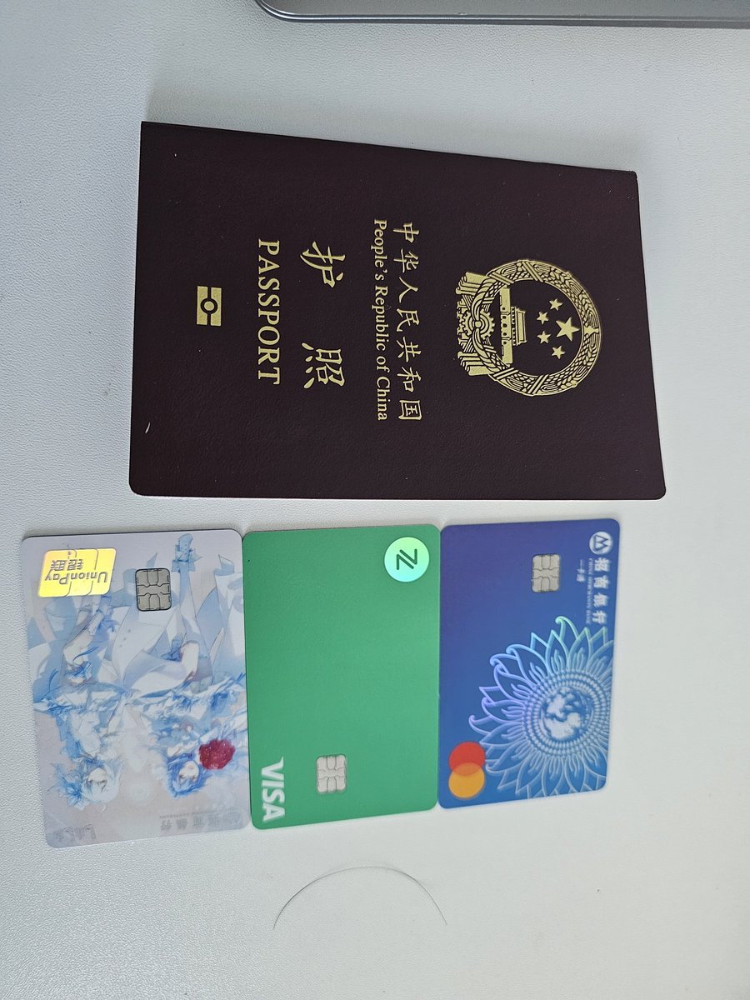

𝓶𝓸𝓻𝓽𝓲𝓼ですわ
@0Yowlry
@fake_fuji 收紧了？真的假的

星野ふじ🍔VTber
@fake_fuji
给迷茫中的中国大陆推友们一些建议：
1.银行卡尽量选招商银行，跨境汇款很友好，甚至可以很顺利的开下万事达储蓄卡，可以用于订阅海外服务
2.有时间去一趟香港，开张港卡，众安银行点击就送，中银中信汇丰的政策最近似乎收紧了
3.护照办出来,有能力者攒点钱，看看外面的世界，切勿沉醉于网络说辞 https://t.co/3XibLnJvMY